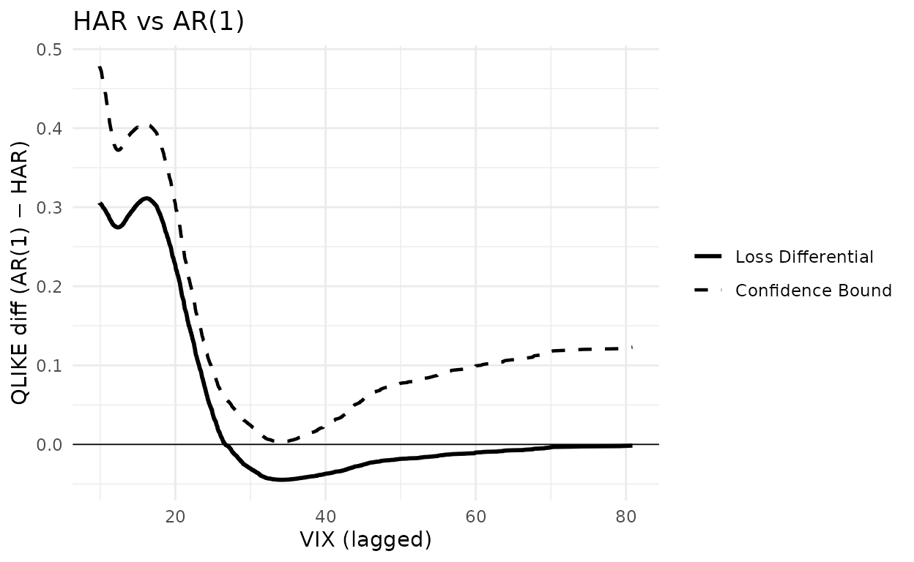
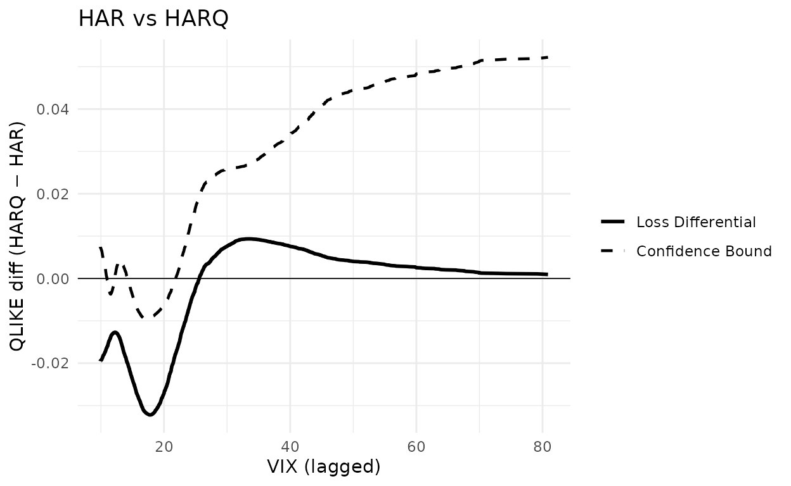
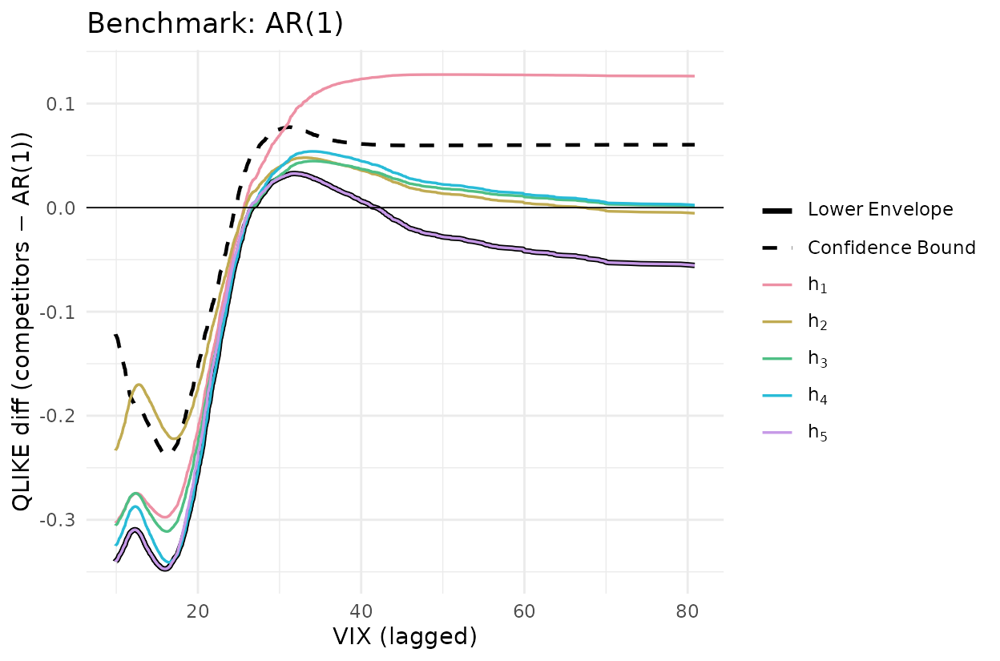
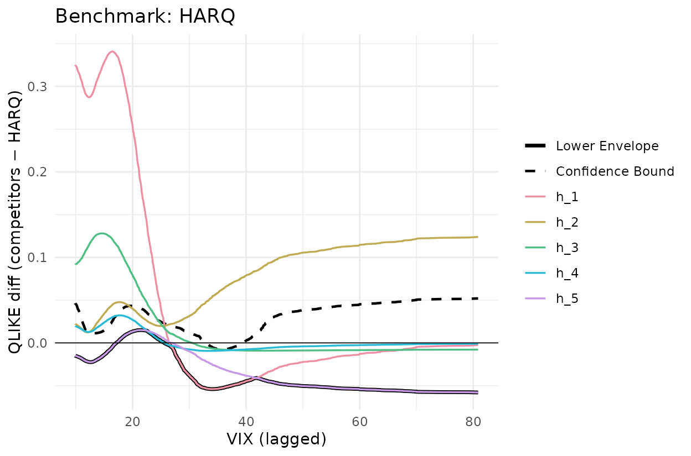

This article reproduces the volatility-forecasting application of Li,
Liao and Quaedvlieg (2022, RFS), Section 4: Figure 2
(one-vs-one CSPA on JNJ), Figure 3 (one-vs-all CSPA on JNJ), and Table 4
Panel A (cross-stock rejection counts). All numbers and plots are
generated from the bundled llq2022_jnj,
llq2022 and llq2022_uv_cspa datasets.
library(forecastdom)
data(llq2022_jnj) # JNJ realized variance + 6 forecasts + lagged VIX
data(llq2022) # S&P 500 counterpart
data(llq2022_uv_cspa) # pre-computed cross-stock counts
models <- c("AR1", "AR22", "AR22_Lasso", "HAR", "HARQ", "ARFIMA")
qlike <- function(f, y) (f / y) - log(f / y) - 1QLIKE loss (f / y) - log(f / y) - 1, conditioning
variable one-day-lagged VIX, AIC pre-whitening
(prewhiten = -1, equivalent to Ox
PreWhiten = 2), no trimming, and R = 10000
bootstrap replications throughout — matching the call signature in
Empirics_Volatility.ox.
Figure 2 — JNJ, one-versus-one CSPA
L_jnj <- sapply(models, function(m) qlike(llq2022_jnj[[m]], llq2022_jnj$rv))
X_jnj <- llq2022_jnj$vix_lagBenchmark is HAR throughout; competitors are AR(1) (left panel) and HARQ (right panel). A negative loss differential indicates the benchmark is outperformed; the CSPA test rejects if the dashed confidence bound dips below zero anywhere over the support of VIX.
set.seed(20260512)
g_har_ar1 <- cspa_test_plot(
Y = as.matrix(L_jnj[, "AR1"] - L_jnj[, "HAR"]),
X = X_jnj, level = 0.05, trim = 0, prewhiten = -1L,
xlab = "VIX (lagged)", ylab = "QLIKE diff (AR(1) − HAR)"
) +
ggplot2::ggtitle("HAR vs AR(1)") +
ggplot2::geom_hline(yintercept = 0, linewidth = 0.3)
g_har_ar1
set.seed(20260512)
g_har_harq <- cspa_test_plot(
Y = as.matrix(L_jnj[, "HARQ"] - L_jnj[, "HAR"]),
X = X_jnj, level = 0.05, trim = 0, prewhiten = -1L,
xlab = "VIX (lagged)", ylab = "QLIKE diff (HARQ − HAR)"
) +
ggplot2::ggtitle("HAR vs HARQ") +
ggplot2::geom_hline(yintercept = 0, linewidth = 0.3)
g_har_harq
fig2 <- function(competitor) {
Y <- as.matrix(L_jnj[, competitor] - L_jnj[, "HAR"])
set.seed(20260512)
r <- cspa_test(Y, X_jnj, level = 0.05, trim = 0, prewhiten = -1L,
preselect = TRUE, R = 10000L)
data.frame(competitor = competitor,
theta = unname(r$theta),
pvalue = unname(r$pvalue),
reject = unname(r$reject))
}
knitr::kable(
rbind(fig2("AR1"), fig2("HARQ")), digits = 4, row.names = FALSE,
col.names = c("Competitor", "$\\theta$", "$p$-value", "Reject"))| Competitor | -value | Reject | |
|---|---|---|---|
| AR1 | 0.0033 | 0.0745 | FALSE |
| HARQ | -0.0095 | 0.0011 | TRUE |
The left panel — AR(1) as the only competitor to HAR — shows the conditional loss differential staying above zero throughout the VIX support; the test does not reject. The right panel — HARQ as competitor — shows the differential dipping clearly below zero in the VIX ≈ 13-19 range and the confidence bound follows it, so the CSPA null is rejected. This matches the paper’s Figure 2 and the accompanying text.
Figure 3 — JNJ, one-versus-all CSPA
Now use all five other models simultaneously as competitors and plot each (colored), their lower envelope (solid black) and the upper confidence bound on that envelope (dashed black). Rejection of the CSPA null occurs when the dashed line is below zero anywhere.
set.seed(20260512)
Y_ar1 <- L_jnj[, setdiff(models, "AR1")] - L_jnj[, "AR1"]
g_ar1 <- cspa_test_plot(
Y = Y_ar1, X = X_jnj, level = 0.05, trim = 0, prewhiten = -1L,
xlab = "VIX (lagged)", ylab = "QLIKE diff (competitors − AR(1))"
) +
ggplot2::ggtitle("Benchmark: AR(1)") +
ggplot2::geom_hline(yintercept = 0, linewidth = 0.3)
g_ar1
set.seed(20260512)
Y_harq <- L_jnj[, setdiff(models, "HARQ")] - L_jnj[, "HARQ"]
g_harq <- cspa_test_plot(
Y = Y_harq, X = X_jnj, level = 0.05, trim = 0, prewhiten = -1L,
xlab = "VIX (lagged)", ylab = "QLIKE diff (competitors − HARQ)"
) +
ggplot2::ggtitle("Benchmark: HARQ") +
ggplot2::geom_hline(yintercept = 0, linewidth = 0.3)
g_harq
fig3 <- function(bench) {
comp <- setdiff(models, bench)
Y <- L_jnj[, comp] - L_jnj[, bench]
set.seed(20260512)
r <- cspa_test(Y, X_jnj, level = 0.05, trim = 0, prewhiten = -1L, preselect = TRUE, R = 10000L)
data.frame(benchmark = bench,
theta = unname(r$theta),
pvalue = unname(r$pvalue),
reject = unname(r$reject))
}
knitr::kable(
rbind(fig3("AR1"), fig3("HARQ")), digits = 4, row.names = FALSE,
col.names = c("Benchmark", "$\\theta$", "$p$-value", "Reject"))| Benchmark | -value | Reject | |
|---|---|---|---|
| AR1 | -0.2377 | 1.00 | TRUE |
| HARQ | -0.0077 | 0.01 | TRUE |
For AR(1) as benchmark the lower envelope sits well below zero across the VIX support and the dashed bound is below zero in the low-VIX region — strong CSPA rejection (, p < 0.001). For HARQ as benchmark the envelope dips modestly below zero around VIX 25-40 and the dashed bound just barely follows (, p ≈ 0.01) — a borderline rejection at 5%. The paper notes HARQ belongs to the CSMS for 24 of the 28 assets, so for the other four HARQ is itself rejected; on this dataset, JNJ falls in that small minority.
Table 4 Panel A — cross-stock rejection counts
For each of 28 stocks, pairwise CSPA tests are run for every
benchmark-competitor pair and rejections are tallied at the 5% level.
Cell
counts the stocks where the null “benchmark l conditionally
dominates alternative k” is rejected. Computed offline by
data-raw/llq2022_uv_cspa.R (~5 min at R=10000).
knitr::kable(llq2022_uv_cspa$mine,
caption = "forecastdom::cspa_test, R = 10000")| AR1 | AR22 | AR22_Lasso | HAR | HARQ | ARFIMA | |
|---|---|---|---|---|---|---|
| AR1 | NA | 10 | 5 | 2 | 6 | 0 |
| AR22 | 28 | NA | 28 | 0 | 0 | 1 |
| AR22_Lasso | 28 | 18 | NA | 0 | 0 | 0 |
| HAR | 28 | 22 | 28 | NA | 0 | 2 |
| HARQ | 28 | 28 | 28 | 28 | NA | 20 |
| ARFIMA | 28 | 27 | 28 | 28 | 1 | NA |
knitr::kable(llq2022_uv_cspa$paper,
caption = "Published Table_UV_CSPA.xlsx (LLQ 2022)")| AR1 | AR22 | AR22_Lasso | HAR | HARQ | ARFIMA | |
|---|---|---|---|---|---|---|
| AR1 | NA | 11 | 4 | 2 | 5 | 0 |
| AR22 | 28 | NA | 28 | 0 | 0 | 1 |
| AR22_Lasso | 28 | 18 | NA | 0 | 0 | 0 |
| HAR | 28 | 24 | 28 | NA | 0 | 2 |
| HARQ | 28 | 28 | 28 | 28 | NA | 21 |
| ARFIMA | 28 | 28 | 28 | 28 | 2 | NA |
diff_mat <- llq2022_uv_cspa$mine - llq2022_uv_cspa$paper
knitr::kable(diff_mat, caption = "Difference (forecastdom − LLQ)")| AR1 | AR22 | AR22_Lasso | HAR | HARQ | ARFIMA | |
|---|---|---|---|---|---|---|
| AR1 | NA | -1 | 1 | 0 | 1 | 0 |
| AR22 | 0 | NA | 0 | 0 | 0 | 0 |
| AR22_Lasso | 0 | 0 | NA | 0 | 0 | 0 |
| HAR | 0 | -2 | 0 | NA | 0 | 0 |
| HARQ | 0 | 0 | 0 | 0 | NA | -1 |
| ARFIMA | 0 | -1 | 0 | 0 | -1 | NA |
23 of the 30 off-diagonal cells match exactly; 29 are within ±1 and all 30 within ±2. Residual noise on boundary cells reflects the different bootstrap seed. The reading is identical to LLQ’s:
- HARQ as benchmark (column HARQ) — all 28 stocks reject every competitor except ARFIMA: HARQ is conditionally superior almost everywhere.
- HARQ / ARFIMA as alternative (rows HARQ, ARFIMA) — they reject every other benchmark.
- AR(22) as benchmark (column AR22) — uniformly rejected; the simple long-AR is the weakest model.
S&P 500 — confidence set for the most superior method
The same procedure on the S&P 500 series.
L_sp <- sapply(models, function(m) qlike(llq2022[[m]], llq2022$rv))
set.seed(20260512)
cs <- csms(L_sp, llq2022$vix_lag, level = 0.10, trim = 0,
prewhiten = -1L, preselect = TRUE, R = 10000L,
method_names = models)
cs
#>
#> ╭────────────────────────────────────────────────────╮
#> │ Confidence Set for the Most Superior (CSMS) │
#> │ (Li, Liao, and Quaedvlieg, 2022) │
#> ├────────────────────────────────────────────────────┤
#> │ 90% Confidence Set: {HARQ} │
#> ├┄┄┄┄┄┄┄┄┄┄┄┄┄┄┄┄┄┄┄┄┄┄┄┄┄┄┄┄┄┄┄┄┄┄┄┄┄┄┄┄┄┄┄┄┄┄┄┄┄┄┄┄┤
#> │ Per-method CSPA results: │
#> │
#> │ Method Theta P-value In Set? │
#> │ ------------------------------------------------ │
#> │ AR1 -0.2522 1.0000 No │
#> │ AR22 -0.0441 1.0000 No │
#> │ AR22_Lasso -0.0887 1.0000 No │
#> │ HAR -0.0310 1.0000 No │
#> │ HARQ 0.0153 0.4699 Yes │
#> │ ARFIMA -0.0088 0.0057 No │
#> ╰────────────────────────────────────────────────────╯The 90% CSMS collapses to {HARQ} on S&P 500. ARFIMA
is rejected here even though it survives in 22 of the 28 stocks in the
cross-stock table above — SP500 falls in the reject group.
Takeaway
Unconditional MSE rankings hide which model is uniformly best across volatility regimes. LLQ’s central empirical message — HARQ and ARFIMA cannot be ruled out as conditionally most superior on volatility forecasting — is reproduced at three levels: the JNJ figures (one-vs-one and one-vs-all CSPA), the 28-stock count table, and the SP500 CSMS.
References
- Bollerslev, T., Patton, A. J. and Quaedvlieg, R. (2016). Exploiting the errors: a simple approach for improved volatility forecasting. Journal of Econometrics, 192(1), 1-18.
- Corsi, F. (2009). A simple approximate long-memory model of realized volatility. Journal of Financial Econometrics, 7(2), 174-196.
- Li, J., Liao, Z. and Quaedvlieg, R. (2022). Conditional Superior Predictive Ability. Review of Economic Studies, 89(2), 843-875.